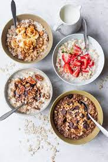

Oatmeal

Description
A hearty breakfaste full of carbs that can be eaten cold or hot!
Ingredients
Oats
Water or milk
Steps
Bring water or milk to a boil
Add oats to milk or water
Simmer the oats for 10 minutes
Enjoy!